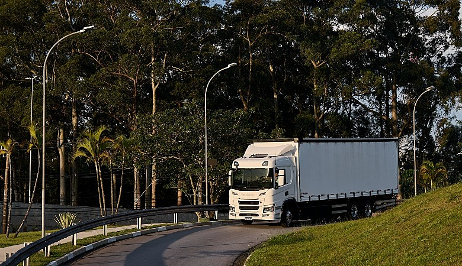
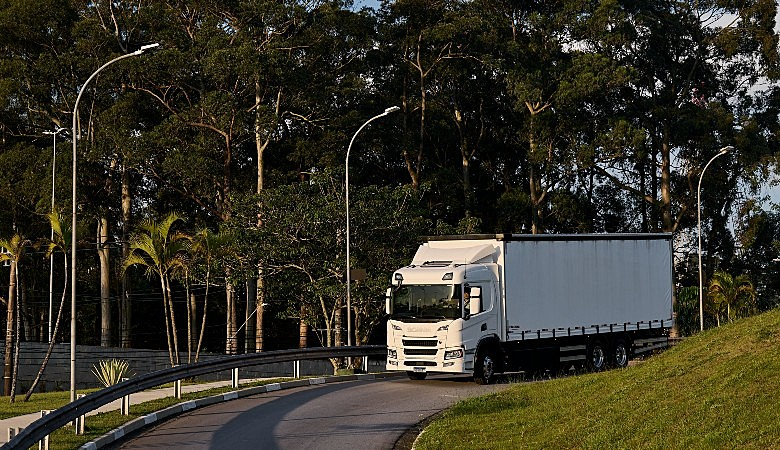

GreenFlow: Movimento Sustentável, Fluxo Sem Fim
A GreenFlow é mais do que uma empresa de transporte — é um movimento em direção a um futuro
mais sustentável. Com o compromisso de transformar o setor de mobilidade, nossa missão é
promover alternativas eficientes e ecológicas para o transporte de pessoas e mercadorias.
Nosso foco é construir um mundo onde a mobilidade não prejudique o meio ambiente, mas sim,
o preserve para as gerações futuras.
Sustentabilidade no Transporte
Na GreenFlow, acreditamos que cada viagem pode ser uma oportunidade para reduzir a pegada de carbono e contribuir para um planeta mais saudável. Seja por meio de veículos elétricos, soluções de compartilhamento de transporte ou tecnologias inovadoras, nossa abordagem é baseada em reduzir o impacto ambiental, ao mesmo tempo em que oferece conveniência, conforto e eficiência.
Movimento Sustentável, Fluxo Sem Fim
Nosso bordão não é apenas um lema, mas a essência do que fazemos. O fluxo sem fim representa nossa visão de um futuro onde a mobilidade é contínua, sem interrupções, sem emissões e sem danos ao nosso planeta. Estamos criando um movimento sustentável, onde cada passo dado para frente é uma contribuição para um ciclo que nunca termina, pois, ao preservar a natureza, garantimos o futuro das próximas gerações.